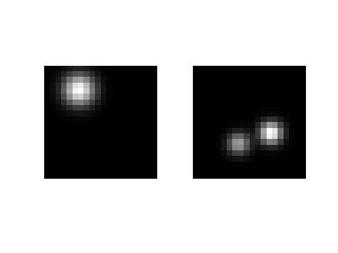
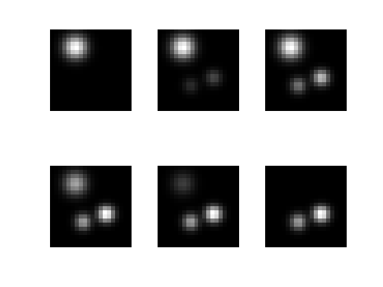
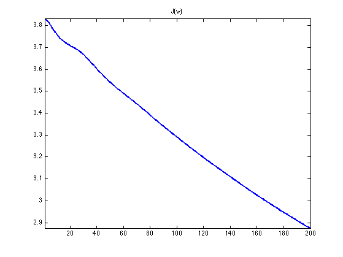
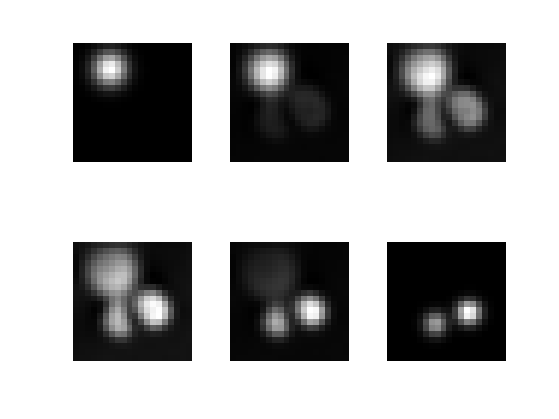

Optimal Transport with Benamou-Brenier Algorithm
This numerical details how to compute optimal transport maps by solving a space-time convex variational problem.
Contents
This tour implements the algorithm described in:
Benamou J.-D.; Brenier Y., A computational fluid mechanics solution of the Monge-Katonrovich mass transfer problem, Numer. Math. 84 (2000), pp. 375-393
The algorithm detailed in this paper is introduced as an augmented-Lagrangia method over the Legendre-Fenchel dual variational problem. In this tour, we introduce a proximal algorithm (Douglas-Rachford) directly over the primal algorithm. Both algorithm can be shown to be equivalent, but we feel that explaining a primal algorithm was conceptually simpler and fits nicely in the well developped framework of proximal splitting schemes.
Special thanks to Jalal Fadili for advices for the implementation of the proximal solver.
Installing toolboxes and setting up the path.
You need to download the following files: signal toolbox and general toolbox.
You need to unzip these toolboxes in your working directory, so that you have toolbox_signal and toolbox_general in your directory.
For Scilab user: you must replace the Matlab comment '%' by its Scilab counterpart '//'.
Recommandation: You should create a text file named for instance numericaltour.sce (in Scilab) or numericaltour.m (in Matlab) to write all the Scilab/Matlab command you want to execute. Then, simply run exec('numericaltour.sce'); (in Scilab) or numericaltour; (in Matlab) to run the commands.
Execute this line only if you are using Matlab.
getd = @(p)path(p,path); % scilab users must *not* execute this
Then you can add the toolboxes to the path.
getd('toolbox_signal/'); getd('toolbox_general/');
Usaful helpers.
mynorm = @(a)norm(a(:)); sum3 = @(a)sum(a(:));
Optimal Transport of Densities
We consider transport \(T : [0,1]^2 \mapsto [0,1]^2 \) with periodic boundary conditions.
A valid transport should push forward the measure \( f_0(x) d x\) onto \( f_1(x) d x \). In term of densities, this corresponds to the constraint \[ f_0(x) = f_1(T(x)) \abs{\det( \partial T(x) )} \] where \(\partial T(x) \in \RR^{2 \times 2}\) is the differential of \(T\) at \(x\). This is known as the gradient equation. We call \(\Tt(f,g)\) the set of transport that satisfies this constraint.
Optimal transport looks for a mapping that solves \[ W(f_0,f_1) = \umin{T \in \Tt(f_0,f_1) } \int C(x,T(x)) d x \] where \(C(x,y) \geq 0\) is the cost of assigning \(x \in [0,1]^2\) to \(y \in [0,1]^2\).
We consider here the \(L^2\) optimal transport, so that \(C(x,y)=\norm{x-y}^2\).
The optimal transport geodesic \(f(x,t)\) is defined as \[ f(x,t) = f_1( (1-t) \text{Id} + t T(x)) \abs{\det( (1-t) \text{Id} + t \partial T(x) )}. \]
Benamou and Brenier showed that this geodesic solves the following convex problem over \(f(x,t) \in \RR^+, m(x,t) \in \RR^2 \) \[ \umin{ (m,f) \in \Cc } J(f) = \int_{[0,1]^2} \int_0^1 \frac{\norm{m(x,t)}^2}{f(x,t)} d t d x, \] where the set of constraints reads \[ \Cc = \enscond{(m,f)}{ \text{div}(m)+\partial_t f = 0, \quad f(\cdot,0)=f_0, \quad f(\cdot,1)=f_1 }. \]
Note that this convex program is very challenging because: 1/ The functional \(J\) tends to zero when \(f(x,t)\) tends to infinity at some points, so that it is not coercive, which makes the proof of existence of minimizers non-trivial. 2/ The functional \(J(m,f)\) tends to infinity when \(f(x,t)\) tends to zero at some points which makes the use of gradient descent methods impossible (its gradient is not Lipschitz).
We propose to use a proximal method scheme (Douglas-Rachford algorithm) that can handle this kind of problem. It is equivalent to the algorithm initially proposed by Benamou and Brenier.
Discrete Variational Problem
Densities is discretized on a spacial rectangular grid of size \(N = n \times n\). The time domain \([0,1]\) is discretized with \(p\) points.
n = 20; p = 20;
Shortcut to generate Gaussian function.
[Y,X] = meshgrid(linspace(0,1,n), linspace(0,1,n)); gaussian = @(a,b,sigma)exp( -((X-a).^2+(Y-b).^2)/(2*sigma^2) ); normalize = @(u)u/sum(u(:));
Load two discretized densities \(f_0,f_1\).
sigma = .1;
rho = .05; % minimum density value
f0 = normalize( rho + gaussian(.2,.3,sigma) );
f1 = normalize( rho + gaussian(.6,.7,sigma*.7) + .6*gaussian(.7,.4,sigma*.7) );
Display \(f_0,f_1\).
clf;
imageplot({f0 f1});
 Boundary conditions, either periodic or Neumann.
bound = 'per'; bound = 'neum';
We use first order finite differences with periodic boundary condition to approximate the spacial derivatives.
if strcmp(bound, 'per') dx = @(u)u([2:end 1],:,:)-u; dy = @(u)u(:,[2:end 1],:)-u; else dx = @(u)u([2:end end],:,:)-u; dy = @(u)u(:,[2:end end],:)-u; end
The adjoint operators are backward derivatives.
if strcmp(bound, 'per') dxS = @(u)-u+u([end 1:end-1],:,:); dyS = @(u)-u+u(:,[end 1:end-1],:); else dxS = @(u)[-u(1,:,:); u(1:end-2,:,:)-u(2:end-1,:,:); u(end-1,:,:)]; dyS = @(u)[-u(:,1,:), u(:,1:end-2,:)-u(:,2:end-1,:), u(:,end-1,:)]; end
Check that dxS and dyS really implement \(d/dx^*\) and \(d/dy^*\).
fprintf('Should be 0: %.2e\n', certify_adjoint(dx,dxS,[n n p])); fprintf('Should be 0: %.2e\n', certify_adjoint(dy,dyS,[n n p]));
Should be 0: 4.81e-15 Should be 0: 1.51e-14
Define spacial gradient and divergence, satisfying \(\text{div}=-\nabla^*\).
grad = @(f)cat(4, dx(f), dy(f)); div = @(u)-dxS(u(:,:,:,1)) - dyS(u(:,:,:,2));
Check that div really implements div.
fprintf('Should be 0: %.2e\n', certify_adjoint(grad,@(v)-div(v),[n n p]));
Should be 0: 3.93e-15
We use first order finite differences for the time derivatives. Note that zero is padded at the end to keep the same dimensionality.
dt = @(f)cat(3, f(:,:,2:end)-f(:,:,1:end-1), zeros(size(f,1),size(f,2)) ); dtS = @(u)cat(3, -u(:,:,1), u(:,:,1:end-2)-u(:,:,2:end-1), u(:,:,end-1));
In the following, we group the dicrete variables as \(w=(m,f) \in \RR^{N \times P \times 2} \times \RR^{N \times P}\), which is stored in a matrix w of size (n,n,p,3), so that \(m\) is stored in w(:,:,:,1:2) and \(f\) is stored in w(:,:,:,3).
We thus introduce the following convex functional for \(w=(m,f)\) \[ J(w) = \sum_{x,t} \frac{\norm{m(x,t)}^2}{f(x,t)}. \] where \((x,t)\) runs over the discrete 3-D grid.
The affine set of constraints reads \[ \Cc = \enscond{w}{A w = r_0} \qwhereq A w = (\text{div}(m) + \partial_t f, f(\cdot,0), f(\cdot,1) ) \in \RR^{N \times (P+2) } \] and where the right hand size reads \(r_0 = (0,f_0,f_1)\).
A = @(w)cat( 3, div(w(:,:,:,1:2))+dt(w(:,:,:,3)), w(:,:,1,3), w(:,:,end,3) );
Its adoint reads, for all \(r=(s, r_0,r_1)\) where \(s \in \RR^{N \times P}\) and \(r_0,r_1 \in \RR^N\): \[ A^* r = ( -\nabla s, \partial_t^* s + U(r_0,r_1) ) \] where \(U(r_0,r_1)\) is the zero-padding operator that puts zeros for intermediate times between \(t=0\) and \(t=1\).
U = @(r0,r1)cat(3, r0, zeros(n,n,p-2), r1); AS = @(s)cat(4, -grad(s(:,:,1:p)), dtS(s(:,:,1:p)) + U(s(:,:,end-1),s(:,:,end)) );
Check that AS really implements \(A^*\).
fprintf('Should be 0: %.2e\n', certify_adjoint(A,AS,[n n p 3]));
Should be 0: 1.96e-15
Define the right hand side \(r_0\).
r0 = cat(3, zeros(n,n,p), f0, f1);
Proximal Operator of the \(J\) Functional
Given a convex functional \(J(w)\), its proximal operator is defined as \[ \text{Prox}_{\la J}(w) = \uargmin{q} \frac{1}{2} \norm{w-q}^2 + \la J(w). \] Being abble to compute this proximate mapping is crucial to be able to use various proximal-splitting convex optimization methods.
The discrete functional to be minimized in the Brenier-Benamou problem reads \[ J(w) = \sum_{x,t} j(m(x,t),f(x,t)) \] where we introduced the following convex function \[ \forall (m,f) \in \RR^2 \times \RR^+, \quad j(m,f) ) = \frac{\norm{m}^2}{f}. \]
Define the \(J\) functional.
J = @(w)sum3( sum(w(:,:,:,1:2).^2,4) ./ w(:,:,:,3) );
The proximal operator of \(J\) can thus be computed by applying the proximal operator of \(j\) to each component, i.e. \[ \text{Prox}_{\la J}(w)(x,t) = \text{Prox}_{\la j}(w(x,t)). \]
The proximal operator of \(j\) \[ (m,f) = \text{Prox}_{\la j}(m_0,f_0) \] is obtained by solving the following couple of equations (corresponding to the annulation of the derivative of the optimization problem defining the proximal map) \[ 2 \la \frac{m}{f} + m-m_0=0 \qandq -\la \frac{\norm{m}^2}{f^2} + f-f_0 = 0. \] Its solution is obtained by solving a cubic-equation \[ m = \frac{m_0}{1+2\la/f} \qandq P(f) = f^3 + (4\lambda - f_0)f^2 + (4\lambda^2-4\lambda f_0)f - (\lambda \norm{m_0}^2 + 4\lambda^2 f_0) = 0. \] (only the largest real solution of this equation should be considered).
Build the coefficients of the polynomial \(P(f)\).
PolyCoef = @(m0,f0,lambda)[ones(length(f0),1), 4*lambda-f0, 4*lambda^2-4*f0, -lambda*sum(m0.^2,2) - 4*lambda^2*f0];
Helper to compute the leading (largest) real root of a cubic polynomial.
extract = @(A)A(:,1); CubicReal = @(P)real( extract(poly_root(P')') );
Define the proximal operator of \(j\). Note that it can operate in parallel over arrays m of size \(k \times 2\) and f of size \(k \times 1\)
Proxj0 = @(m0,f, lambda)cat(2, m0 ./ repmat( 1+2*lambda./f, [1 2]), f ); Proxj = @(m0,f0,lambda)Proxj0( m0, CubicReal(PolyCoef(m0,f0,lambda)), lambda );
Define the proximal operator of \(J\) using the proximal operator of \(j\).
ProxJ = @(w,lambda)reshape( Proxj( ... reshape(w(:,:,:,1:2), [n*n*p 2]), ... reshape(w(:,:,:,3 ), [n*n*p 1]), lambda ), [n n p 3] );
Orthogonal Projection on the Constraints
The proximal operator of the indicator function \(G=\iota_\Cc\) of \(\Cc\) is the projector, and does not depend on \(\la\). \[ \text{Prox}_{\gamma \iota_\Cc}(x)_i = \text{Proj}_\Cc(w) = w + A^* (A A^*)^{-1} (r-Aw). \]
Tolerance and number of iterations for the conjugate gradient.
opts.epsilon = 1e-9; opts.niter_max = 150;
Adapt conjugate gradient fucntion to handle variables that are not vectors.
flat = @(x)x(:); resh = @(x)reshape(x, [n n p+2]); mycg = @(B,y)resh( perform_cg(@(r)flat(B(resh(r))),y(:),opts) );
The operator \((A A^*)^{-1}\) can be computed using conjugate gradient.
pA = @(r)mycg(@(s)A(AS(s)),r);
Define the projection operator \(\text{Prox}_{\la G}\).
ProxG = @(w,lambda)w + AS( pA(r0-A(w)) );
Check that \(\text{Prox}_{\la G}\) implements the projection on the constraint \(Aw=y\).
w = randn(n,n,p,3); err = @(w)mynorm(A(w)-r0)/mynorm(r0); fprintf('Error before projection: %.2e\n', err(w)); fprintf('Error before projection: %.2e\n', err(ProxG(w)));
Error before projection: 1.73e+03 Error before projection: 1.70e-06
Douglas-Rachford Solver
The discrete optimal transport problem can be written as \[ \umin{w} J(w) + G(w) \qwhereq G=\iota_{\Cc}. \]
The Douglas-Rachford (DR) algorithm is an iterative scheme to minimize functionals of the form \(J+G\) where \(J\) and \(G\) are convex functions for which one is able to comptue the proximal operators.
A DR iteration reads \[ \tilde w_{k+1} = \pa{1-\frac{\mu}{2}} \tilde w_k + \frac{\mu}{2} \text{rPox}_{\gamma J}( \text{rProx}_{\gamma G}(\tilde w_k) ) \qandq w_{k+1} = \text{Prox}_{\gamma G}(\tilde w_{k+1}). \]
We have use the following shortcuts: \[ \text{rProx}_{\gamma G}(w) = 2\text{Prox}_{\gamma F}(w)-w \]
One can show that for any value of \(\gamma>0\), any \( 0 < \mu < 2 \), and any \(\tilde w_0\), \(w_k \rightarrow w^\star\) which is a minimizer of the minimization of \(J+G\).
To learn more about this algorithm, you can read:
Proximal Splitting Methods in Signal Processing, Patrick L. Combettes and Jean-Christophe Pesquet, in: Fixed-Point Algorithms for Inverse Problems in Science and Engineering, New York: Springer-Verlag, 2010.
Set the value of \(\mu\) and \(\gamma\). You might consider using your own values to speed up the convergence.
mu = 1; gamma = 1;
Define the rProx operators.
rProxJ = @(w,tau)2*ProxJ(w,tau)-w; rProxG = @(w,tau)2*ProxG(w,tau)-w;
Number of iterations.
niter = 200;
Initialization using linear interpolation of the densities.
t = repmat( reshape(linspace(0,1,p), [1 1 p]), [n n 1]); f = (1-t) .* repmat(f0, [1 1 p]) + t .* repmat(f1, [1 1 p]); m = zeros(n,n,p,2); w0 = cat(4, m,f);
Display the initialization.
sel = round(linspace(1,p,6)); clf; imageplot( mat2cell(w0(:,:,sel,3), n, n, ones(6,1)) , '', 2,3); % w = ProxG(w0,gamma); mynorm(A(w0)-r0)/mynorm(r0) mynorm(A(w)-r0)/mynorm(r0) %
ans =
0.1994
ans =
2.8807e-07
 Exercice 1: (check the solution) Implement the DR iterative algorithm on niter iterations. Keep track of the evolution of the energy \(J\).
exo1;
Warning: Input tol may not be achievable by CGS
Try to use a bigger tolerance
Warning: Input tol may not be achievable by CGS
Try to use a bigger tolerance
 Display the resulting density \(f(x,t)\) for \(t\) from 0 to 1.
sel = round(linspace(1,p,6));
clf;
imageplot( mat2cell(w(:,:,sel,3), n, n, ones(6,1)) , '', 2,3);
